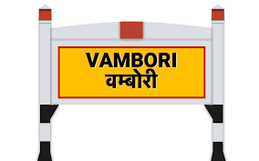

Tourist-Places
kholeshwer temple:

Vambori or Wambori is a Panchyat town located in Rahuri Tehsil and, fall under Ahilya Nagar district, Maharashtra State, India. Vambori village falls under Rahuri assembly constituency, and Ahmednagar Lok Sabha constituency.

Vambori Kholeshwar Mandir is dedicated to Lord Shiva as Kholeshwar. The temple is located in the Vambori Village in Rahuri Taluka in Ahmednagar District of ... Kholeshwar Mahadev Temple, Vambori, Maharashtra. There is a legend that Valmiki wrote Ramayana on the left shrine at Vambori in Ahmednagar district.
Gorakhnath is considered a Maha-yogi (or "great yogi") in Hindu tradition.[9] He did not emphasise a specific metaphysical theory or a particular Truth, but emphasised that the search for Truth and the spiritual life is a valuable and normal goal of man.[9] Gorakhnath championed Yoga, spiritual discipline and an ethical life of self liberation as a means to reaching samadhi.[9] Gorakhnath, his ideas, and his yogis have been popular in rural India, with monasteries and temples dedicated to him found in many states of India, particularly in the eponymous city of Gorakhpur
Vambori Railway Station (VBR) is situated in the Vambori village of Ahmadnagar district, Maharashtra. With 3 platforms, it caters to local and regional train services. The station provides basic amenities like waiting rooms and a refreshment stall. Vambori is known for its surrounding agricultural fields and the serene environment.